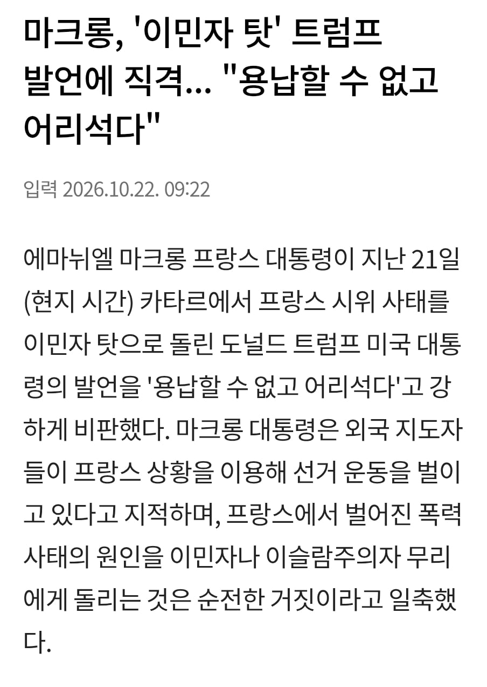

그니까 마크롱이 트럼프한테 저러잖아
프랑스 대통령이 트럼프였으면 느그 흑인이나 관리 잘 하라고 했을듯
ㅋㅋㅋㅋ
ㅋㅋㅋㅋㅋㅋㅋㅋㅋㅋㅋㅋㅋㅋㅋㅋㅋㅋㅋㅋㅋㅋㅋㅋㅋㅋㅋㅋㅋㅋㅋㅋㅋㅋㅋㅋㅋㅋㅋㅋㅋㅋㅋㅋ

느그 혹인ㅋㅋㅋ
맵다매워 ㅋㅋㅋㅋ
근데 왜 돼지고기는 안건드리고
할랄 음식점은 안털어??
할랄이면 할랄음식점 털어야 되는거 아니냐?
그곳은 신성한곳입니다
우리편을 왜터노
마크롱도 모르진 않겠지. 마치...
모든 일의 시작 = 프랑스 정부는 50여년동안 흑자인 적이 없다
돈 없음이 모든일의 시작이고
현재 현실은 총체적 난국으로 모든 사람이 자신에 맞게 뽑아서 쓸 수 있음
미 정부도 25년째 흑자인 적이 없다고 한다
미국은 시이벌거 달러 프린트기만 켜면됨
유럽새끼들 보면 가오만 있고 부자집 3대에서 망하려는 새끼들 같음
그러고 보니 식민지 털리고 딱 3대 쯤 왔네.
정확한 비유다.
일본도 유럽도 이제 부자로써 살아온 3대가 끝나가는 느낌임. 그저 과거 잘나갔다고 의미없는 자존심만 남은
비슷한데 서로 느낌이다름 일본은 2대때 잘 못 한걸 수습 제대로 못 하는 느낌이라면 유럽은 지가 뭔 할 수 있는지 모르고 가오 잡다 집내주는 느낌
근데 어째 한국 대만 중국 제외하고 기존에 잘살건 애들에 자리를 대체하거나 밑에서 기어올라온 애들이 없고 한국 대만 중국도 억지로 성장 시키느라 몸에 폭탄 한개씩 장착해서 3대 가기 전에 터질거 같은 느낌임......
인류 전체가 ㅈ박고 있는거 같음
프랑스의 현재 문제는 이민자 탓이 아니야..
엄연히 이민자 탓은 아닌게 맞지.
프랑스의 현상황은 수십년간 쌓여온 적자 문제가 터진거고
그 혼파망에 난민이 끼어 깽판치는거지
저 적자문제에 난민이 기여한바는 크지 않음
마크롱 요즘 트럼프에 자주 맞서더라
그런 구도, 그림을 스스로 원하고 잇는거 같음
프랑스 애들이 원래 미국이랑 외교적으로 좀 삐딱하게 대립각을 새워옴.
벼헝시인
기성세대가 젊은이들에게 영수증과 통나무를 쥐어주고 내지인/이민자 갈등을 부추겨서 이 사달이 난건데 노머고새끼가 할 말은 아니지. 폭력시위냐 아니냐를 떠나서 한나라 내부에서 일어나는 갈등을 타국의 대가리가 이래라저래라 할 건 아니지. 트럼프 저능아새끼는 낄낄빠빠나 했으면.
트럼프형, 공화당을 부숴주세요.
만약 이민자 탓이 맞더라도 공개석상에서 이민자 씹새끼들! 해버리면 이미 인구에서 상당수를 차지하는 이민자들이 뭔 패악을 부릴지 모르는데..
난민 때문은 아닌 결국 자국민 늙어빠진 프랑스
틀딱들 때뮨이라고 왜 말을 못하니 크롱아
프랑스는 이민자 문제보단 몇십년동안 존나게 퍼줘서 곪아있던게 터진거지
뭔가 크고 거대한 리셋버튼이 눌러질꺼같은 요즘 시대다
이미 먹혔으니 별 수 있나ㅋㅋㅋㅋ 걍 망하면됨
확실한건 노머고는 프랑스가 어떤 꼴인지는 관심 없고
그냥 자기 표빨이 하기 좋은 상황이라 입터는 것 뿐임
이게 마따 ㄹㅇ
업보지다

중장년층 반발이 두려워 연금수급연령 올려버리고
청년층은 끼야악 우리 착취당한다 뛰쳐나오고
이제 여기에 마라소스처럼 이민자들이 섞여서 싸움이야? 나도 끼어야쥥. 필살 가게 부수기! 한 느낌처럼 보여지긴 하는데, 원인을 따지면 이민자가 원인은 아니겠지. 증폭제라면 모를까
이민자가 문제가 아니라 난민이 문제지. 난민 들어오면서 안그래도 사회적 복지 금액이 좆나게 높은 나라가 이슬람문화 쳐들고 들어와서 우리를 받아들여라하는 난민따위때문에 내 세금은 세금대로 더 빨려나가고 있는 상황인데 증폭제 수준이 아니라 원인 중 하나인거지 뭐
난민 생각하며 이민자라고 말한건데 내가 단어를 잘못썼네
그냥 딱 하루 퍼지데이 만들어주면 대부분의 문제가 해결된다고
요즘 보면 프랑스 드립넷인줄
엘랑이나 해라
프랑스는 이민자 문제가 아니고 수익은 적으면서 복지,연금으로 펑펑 써온게 크지.
그냥 미테랑 정권 시절부터 확대된 복지 백지화시키고 개혁하는게 답임
마크롱 병신 새끼 더 처맞아라
진짜 남초커뮤 우경화 심각하긴 하구나
이번에 가담한 난민들 모조리 추방시키고 약탈한애들 다 중형때리면 좋을텐데 ㅋㅋ
나중에 ㄹㅇ 프랑스 국기에 초승달 들어갈듯 ㅋㅋㅋㅋ
고장난시계트럼프 맞말추 ㅋㅋㅋㅋ
또다른 문제인거지 원인은 아니지 노머고 씹년
마크롱이 맞지 이미 자국 내에 편입된 집단에 대해 대중의 증오를 키워봤자 이익될게 뭐임? 문제 인식은 하더라도 말하는건 다른 문제임